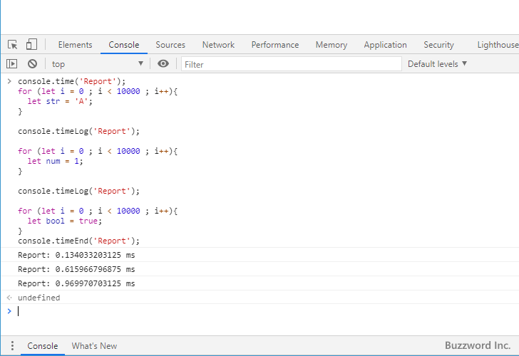

タイマーを使って処理時間を計測する
Console オブジェクトの console.time メソッドを呼び出してから console.timeEnd メソッドを次に呼び出すまでの経過ミリ秒を計測することができます。この機能を利用することで、 2 つのメソッドを呼び出す間に行った処理にかかった時間を計測することができます。ここでは Console オブジェクトのタイマー機能を使って処理時間を計測する方法について解説します。
タイマーを使って処理時間を計測
Console オブジェクトで用意されている console.time メソッドをおよび console.timeEnd メソッドを使って、処理を行った時間をミリ秒単位で計測することができます。書式は次の通りです。
console.time(ラベル) console.timeEnd(ラベル)
console.time メソッドを呼び出すと時間の計測が開始されます。そして console.timeEnd メソッドが呼び出されると、計測が終了し開始から終了までの経過時間をコンソールに出力します。ラベルを指定することで、複数のタイマーを同時に動かして計測することができます。計測が完了すると 'ラベル: xxxx ms' という形式でコンソールに出力が行われます。
次のサンプルをみてください。
console.time('for');
for (let i = 0 ; i < 10000 ; i++){
let str = 'A';
}
console.timeEnd('for');
console.time('while');
let num = 0;
while (num < 10000){
let str = 'A';
num += 1;
}
console.timeEnd('while');
このサンプルでは最初に for 文を使って 1 万回変数に文字列を代入する処理を行う時間を計測し、次に while 文を使って同じ内容の処理を行う時間を計測しました。今回の場合は次のように計測時間が出力されています。
for: 0.1708984375 ms while: 0.382080078125 ms
任意のタイミングで途中の経過時間をログに出力する
Console オブジェクトで用意されている console.timeLog メソッドを使用すると、計測中の任意の地点でこのメソッドを呼び出した時点までの計測時間をミリ秒単位で計測することができます。書式は次の通りです。
console.timeLog(ラベル)
console.time メソッドを呼び出し時間の計測を開始してから console.timeEnd メソッドが呼び出されて計測が終了するまでの間で console.timeLog メソッドを呼び出すことで、途中の時点での計測時間をログに出力することができます。途中までの計測時間は、最後に出力されるのと同じ 'ラベル: xxxx ms' という形式でコンソールに出力が行われます。
次のサンプルをみてください。
console.time('Report');
for (let i = 0 ; i < 10000 ; i++){
let str = 'A';
}
console.timeLog('Report');
for (let i = 0 ; i < 10000 ; i++){
let num = 1;
}
console.timeLog('Report');
for (let i = 0 ; i < 10000 ; i++){
let bool = true;
}
console.timeEnd('Report');

このサンプルでは最初に for 文を使った処理を 3 回行っています。計測の途中で console.timeLog メソッドを使い、途中までの計測時間もコンソールに出力しています。
Report: 0.134033203125 ms Report: 0.615966796875 ms Report: 0.969970703125 ms
-- --
Console オブジェクトのタイマー機能を使って処理時間を計測する方法について解説しました。
( Written by Tatsuo Ikura )

著者 / TATSUO IKURA
初心者～中級者の方を対象としたプログラミング方法や開発環境の構築の解説を行うサイトの運営を行っています。